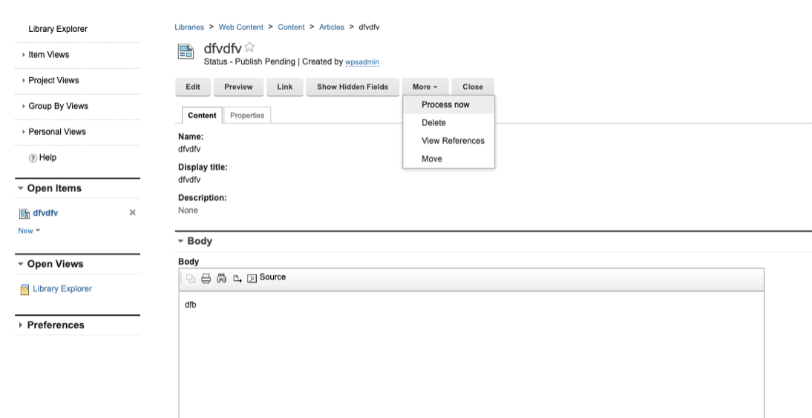
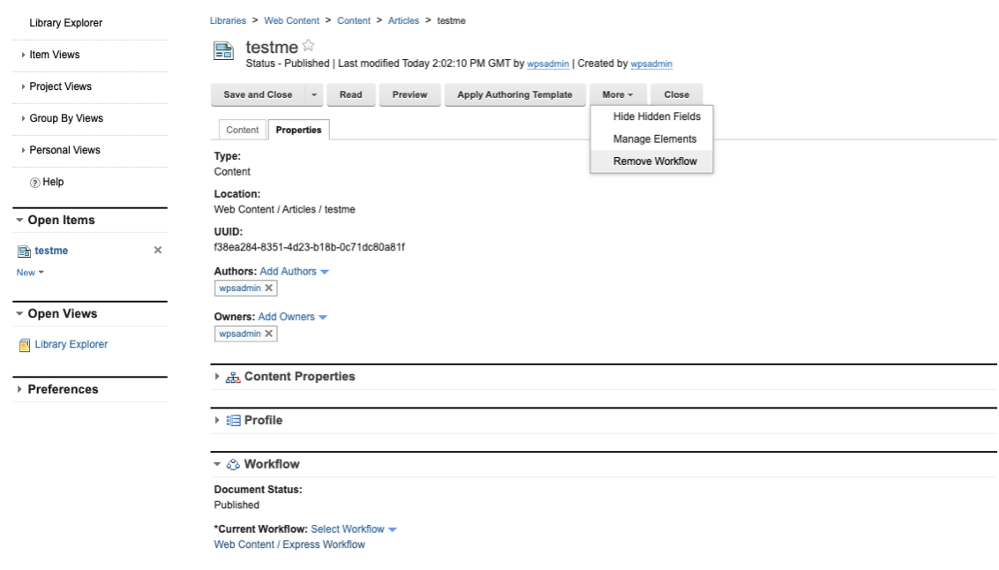

How to use REST with drafts and workflows
You can use the REST services for HCL Web Content Manager to create drafts, approve items in a workflow, retrieve workflow comments from content items, and move items through different stages of a workflow.
New with HCL Digital Experience 9.5 Container Update CF181 and higher releases, two new APIs are added to handle Process Now and Remove Workflow from an item functionality. HCL DX 9.5 CF19 and higher release adds support to retrieve workflow comments from content items.
Creating a draft of an item that does not use a workflow
You can create a draft of items that do not use workflows.
To do that, specify explicitly the draft workflow state in the request entry data. For example, to create a link component as draft:
HTTP/1.1 POST
http://host:port/wps/mycontenthandler/wcmrest/LibraryLinkComponent
<atom:entry xmlns:atom="http://www.w3.org/2005/Atom" xmlns:wcm="wcm/namespace">
<wcm:name>linkDraft_E</wcm:name>
<atom:link atom:rel="library" atom:href="/wps/mycontenthandler/!ut/p/wcmrest/item/d07f0a12-3801-465e-bc20-eaec2cecf5cb"/>
<category label="Draft" scheme="wcmrest:workflowState" term="DRAFT"/>
</atom:entry>
201 Created
Creating a draft in a workflow
You can use the REST service to create a new draft item. This is equivalent to using the Create Draft icon in the authoring portlet.
A new draft of an item can be created by sending a POST request to the following URI:
/item/item-uuid/create-draft
For example:
HTTP/1.1 POST
http://host:port/wps/mycontenthandler/wcmrest/item/item-uuid/create-draft
201 Created
Moving an item to the next stage
You can use the REST service to move an item to the next stage of a workflow. This is equivalent to using the Next Stage icon in the authoring portlet.
An item can be moved to the next stage by sending a POST request to the following URI:
/item/item-uuid/next-stage
For example:
HTTP/1.1 POST
http://host:port/wps/mycontenthandler/wcmrest/item/<item-uuid>/next-stage
201 Created
Moving an item to the previous stage
You can use the REST service to move an item to the previous stage of a workflow. This is equivalent to using the Previous Stage icon in the authoring portlet.
An item can be moved to the previous stage by sending a POST request to the following URI:
/item/item-uuid/previous-stage
For example:
HTTP/1.1 POST
http://host:port/wps/mycontenthandler/wcmrest/item/item-uuid/previous-stage
201 Created
Approving an item within a workflow
You can use the REST service to move an item to the next stage of a workflow by approving it. This is equivalent to using the Approve icon in the authoring portlet.
An item can be approved by sending a POST request to the following URI:
/item/item-uuid/approve
For example:
HTTP/1.1 POST
http://host:port/wps/mycontenthandler/wcmrest/item/item-uuid/approve
201 Created
Rejecting an item within a workflow
You can use the REST service to reject an item in a workflow. This is equivalent to using the Reject icon in the authoring portlet.
An item can be rejected by sending a POST request to the following URI:
/item/item-uuid/reject
For example:
HTTP/1.1 POST
http://host:port/wps/mycontenthandler/wcmrest/item/item-uuid/reject
201 Created
Restarting a workflow
You can use the REST service to restart a workflow. This is equivalent to using the Restart icon in the authoring portlet.
An item can be restarted by sending a POST request to the following URI:
/item/item-uuid/restart
For example:
HTTP/1.1 POST
http://host:port/wps/mycontenthandler/wcmrest/item/item-uuid/restart
201 Created
Workflow Comments
To ensure that comments are added to workflow stages that require comments, a GET request must be issued to the associated link. This will return an HTML form indicating whether a comment is required.
To add the comment you either submit the form, or perform an HTTP Post request with a content type of text/plain.
For example:
HTTP GET /wps/mycontenthandler/wcmrest/item/84e35979-d7c4-429a-b2ab-eb79abc5debc/next-stage
Accept: text/html
<html>
<b>Next Stage</b><br><br>
<form action="/wps/mycontenthandler/!ut/p/digest!hp5aUN2TU2D-7ziKYRo2-g/wcmrest/item/84e35979-d7c4-429a-b2ab-eb79abc5debc/
next-stage" enctype="multipart/form-data" method="POST">
<label for="comment"><b>*</b>Enter Comment</label>
<input id="comment" name="comment" type="text" required/><br>
<input type="submit" value="Submit"></input>
</form>
</html>
Process Now and Remove Workflow APIs
The Process Now and Remove Workflow from an item functionality are equivalent to their functionality in user interfaces:


Using the Process Now API
-
Endpoint
POST request to:
http://host:port/wps/mycontenthandler/wcmrest/item/<(UUID of the content)>/process-now
Sample URL:
http://localhost:10039/wps/mycontenthandler/wcmrest/item/02894453-b03a-4935-8078-5f8ac923a5b0/process-now
-
Expected Body
The Body can just have the basic Web Content Manager structure or be empty altogether.
<?xml version="1.0" encoding="UTF-8"?> <feed xmlns="http://www.w3.org/2005/Atom" xmlns:wcm="http://www.ibm.com/xmlns/wcm/8.0"> </feed> -
Expected Headers
LTPA token of the user.
-
Return Body
The item API for the updated item. This is the same result as when calling .../wcmrest/item/
Sample:
<?xml version="1.0" encoding="UTF-8"?> <entry xmlns="http://www.w3.org/2005/Atom" xmlns:wcm="http://www.ibm.com/xmlns/wcm/8.0"> <id>wcmrest:09a555cc-05ac-466c-9c8b-80aed68e4f7b</id> <title xml:lang="en">dfvdfv</title> <summary xml:lang="en"></summary> <wcm:name>dfvdfv</wcm:name> <wcm:type>Content</wcm:type> <updated>2020-05-27T14:36:37.371Z</updated> <published>2020-05-27T14:36:35.689Z</published> <wcm:created>2020-05-27T14:04:59.407Z</wcm:created> <author> <wcm:distinguishedName>uid=wpsadmin,o=defaultWIMFileBasedRealm</ wcm:distinguishedName> <uri>/wps/mycontenthandler/!ut/p/digest!rsWBIQ8xIEvedYpzepFP9w/um/ users/profiles/Z9eAe4JDIJSS6G9P6MMKCJ1P6JMG6NHC6JM4CMPCAMMGCO1CCMR8CNPCGJS06M1</uri> <name>wpsadmin</name> </author> <wcm:owner> <wcm:distinguishedName>uid=wpsadmin,o=defaultWIMFileBasedRealm</ wcm:distinguishedName> <uri>/wps/mycontenthandler/!ut/p/digest!rsWBIQ8xIEvedYpzepFP9w/um/ users/profiles/Z9eAe4JDIJSS6G9P6MMKCJ1P6JMG6NHC6JM4CMPCAMMGCO1CCMR8CNPCGJS06M1</uri> <name>wpsadmin</name> </wcm:owner> <wcm:lastModifier> <wcm:distinguishedName>uid=wpsadmin,o=defaultWIMFileBasedRealm</ wcm:distinguishedName> <uri>/wps/mycontenthandler/!ut/p/digest!rsWBIQ8xIEvedYpzepFP9w/um/users/profiles/Z9eAe4JDIJSS6G9P6MMKCJ1P6JMG6NHC6JM4CMPCAMMGCO1CCMR8CNPCGJS06M1</uri> <name>wpsadmin</name> </wcm:lastModifier> <wcm:creator> <wcm:distinguishedName>uid=wpsadmin,o=defaultWIMFileBasedRealm</ wcm:distinguishedName> <uri>/wps/mycontenthandler/!ut/p/digest!rsWBIQ8xIEvedYpzepFP9w/um/ users/profiles/Z9eAe4JDIJSS6G9P6MMKCJ1P6JMG6NHC6JM4CMPCAMMGCO1CCMR8CNPCGJS06M1</uri> <name>wpsadmin</name> </wcm:creator> <wcm:profile/> <wcm:workflow> <wcm:publishDate>2020-05-30T00:00:00.000Z</wcm:publishDate> </wcm:workflow> <link rel="self" href="/wps/mycontenthandler/!ut/p/digest!rsWBIQ8xIEvedYpzepFP9w/wcmrest/Content/ 09a555cc-05ac-466c-9c8b-80aed68e4f7b" xml:lang="en" label="Read"/> <link rel="edit" href="/wps/mycontenthandler/!ut/p/digest!rsWBIQ8xIEvedYpzepFP9w/wcmrest/Content/ 09a555cc-05ac-466c-9c8b-80aed68e4f7b" xml:lang="en" label="Edit"/> <link rel="delete" href="/wps/mycontenthandler/!ut/p/digest!rsWBIQ8xIEvedYpzepFP9w/wcmrest/Content/ 09a555cc-05ac-466c-9c8b-80aed68e4f7b" xml:lang="en" label="Delete"/> <link rel="workflow-stage" href="/wps/mycontenthandler/!ut/p/digest!rsWBIQ8xIEvedYpzepFP9w/wcmrest/ WorkflowStage/f89d88b6-b375-4a65-9b99-9befdfc721e1" xml:lang="en" label="Workflow Stage"/> <link rel="workflow" href="/wps/mycontenthandler/!ut/p/digest!rsWBIQ8xIEvedYpzepFP9w/wcmrest/ Workflow/9ed22ac1-0c5a-4236-9e44-0faefd219d89" xml:lang="en" label="Workflow"/> <link rel="access-control" href="/wps/mycontenthandler/!ut/p/digest!rsWBIQ8xIEvedYpzepFP9w/ac/ access:oid:Z6QReDeG9E2MQK6LPO6MM06L9O6MMG6MHD6MM4733E4MM07G9OA6IP6O9P83JT623" xml:lang="en" label="Access Control"/> <link rel="library" href="/wps/mycontenthandler/!ut/p/digest!rsWBIQ8xIEvedYpzepFP9w/wcmrest/Library/ bfa08d5f-1833-4e4e-9455-d23ad24d1179" xml:lang="en" label="Library"/> <link rel="parent" href="/wps/mycontenthandler/!ut/p/digest!rsWBIQ8xIEvedYpzepFP9w/wcmrest/SiteArea/ 9cedbc01-a0a8-4c3f-8051-c9395d13e769" xml:lang="en" label="Parent"/> <link rel="versions" href="/wps/mycontenthandler/!ut/p/digest!rsWBIQ8xIEvedYpzepFP9w/wcmrest/item/ 09a555cc-05ac-466c-9c8b-80aed68e4f7b/versions" xml:lang="en" label="Versions"/> <link rel="preview" href="/wps/poc/!ut/p/digest!rsWBIQ8xIEvedYpzepFP9w/wcm/ oid:09a555cc-05ac-466c-9c8b-80aed68e4f7b" xml:lang="en" label="Preview"/> <link rel="edit-media" href="/wps/mycontenthandler/!ut/p/digest!rsWBIQ8xIEvedYpzepFP9w/wcmrest/ Content/09a555cc-05ac-466c-9c8b-80aed68e4f7b" type="application/vnd.ibm.wcm+xml" xml:lang="en" label="Edit Media"/> <link rel="content-template" href="/wps/mycontenthandler/!ut/p/digest!rsWBIQ8xIEvedYpzepFP9w/wcmrest/ ContentTemplate/3fdeaf06-48d4-4fee-87e7-564d210aee71" xml:lang="en" label="Content Template"/> <link rel="elements" href="/wps/mycontenthandler/!ut/p/digest!rsWBIQ8xIEvedYpzepFP9w/wcmrest/ Content/09a555cc-05ac-466c-9c8b-80aed68e4f7b/elements" xml:lang="en" label="Elements"/> <category scheme="wcmrest:workflowState" term="PUBLISHED" label="Published" xml:lang="en"/> <category scheme="wcmrest:favorite" term="false" xml:lang="en"/> <content type="application/vnd.ibm.wcm+xml"> <wcm:content xmlns="http://www.ibm.com/xmlns/wcm/8.0"> <elements xmlns:atom="http://www.w3.org/2005/Atom"> <element name="Body"> <title xml:lang="en">Body</title> <type>RichTextComponent</type> <data type="text/html"> <![CDATA[<p dir="ltr">dfb</p> ]]> </data> </element> </elements> </wcm:content> </content> </entry>
Using the Remove Workflow API
-
Endpoint
POST request to:
http://host:port/wps/mycontenthandler/wcmrest/item/<(UUID of the content)>/remove-workflow
Sample URL:
http://localhost:10039/wps/mycontenthandler/wcmrest/item/02894453-b03a-4935-8078-5f8ac923a5b0/remove-workflow
-
Expected Body
The Body can just have the basic Web Content Manager structure or just be empty altogether.
<?xml version="1.0" encoding="UTF-8"?> <feed xmlns="http://www.w3.org/2005/Atom" xmlns:wcm="http://www.ibm.com/xmlns/wcm/8.0"> </feed> -
Expected Headers
LTPA token of the user.
-
Return Body
The item API for the updated item. The result is the same as when calling .../wcmrest/item/.
Sample:
<?xml version="1.0" encoding="UTF-8"?> <entry xmlns="http://www.w3.org/2005/Atom" xmlns:wcm="http://www.ibm.com/xmlns/wcm/8.0"> <id>wcmrest:02894453-b03a-4935-8078-5f8ac923a5b0</id> <title xml:lang="en">tedst33</title> <summary xml:lang="en"></summary> <wcm:name>tedst33</wcm:name> <wcm:type>Content</wcm:type> <updated>2020-05-27T13:26:07.983Z</updated> <wcm:created>2020-05-27T12:19:05.008Z</wcm:created> <author> <wcm:distinguishedName>uid=wpsadmin,o=defaultWIMFileBasedRealm</ wcm:distinguishedName> <uri>/wps/mycontenthandler/!ut/p/digest!rsWBIQ8xIEvedYpzepFP9w/um/ users/profiles/Z9eAe4JDIJSS6G9P6MMKCJ1P6JMG6NHC6JM4CMPCAMMGCO1CCMR8CNPCGJS06M1</uri> <name>wpsadmin</name> </author> <wcm:owner> <wcm:distinguishedName>uid=wpsadmin,o=defaultWIMFileBasedRealm</ wcm:distinguishedName> <uri>/wps/mycontenthandler/!ut/p/digest!rsWBIQ8xIEvedYpzepFP9w/um/ users/profiles/Z9eAe4JDIJSS6G9P6MMKCJ1P6JMG6NHC6JM4CMPCAMMGCO1CCMR8CNPCGJS06M1</uri> <name>wpsadmin</name> </wcm:owner> <wcm:lastModifier> <wcm:distinguishedName>uid=wpsadmin,o=defaultWIMFileBasedRealm</ wcm:distinguishedName> <uri>/wps/mycontenthandler/!ut/p/digest!rsWBIQ8xIEvedYpzepFP9w/um/ users/profiles/Z9eAe4JDIJSS6G9P6MMKCJ1P6JMG6NHC6JM4CMPCAMMGCO1CCMR8CNPCGJS06M1</uri> <name>wpsadmin</name> </wcm:lastModifier> <wcm:creator> <wcm:distinguishedName>uid=wpsadmin,o=defaultWIMFileBasedRealm</ wcm:distinguishedName> <uri>/wps/mycontenthandler/!ut/p/digest!rsWBIQ8xIEvedYpzepFP9w/um/ users/profiles/Z9eAe4JDIJSS6G9P6MMKCJ1P6JMG6NHC6JM4CMPCAMMGCO1CCMR8CNPCGJS06M1</uri> <name>wpsadmin</name> </wcm:creator> <wcm:profile/> <link rel="self" href="/wps/mycontenthandler/!ut/p/digest!rsWBIQ8xIEvedYpzepFP9w/wcmrest/Content/ 02894453-b03a-4935-8078-5f8ac923a5b0" xml:lang="en" label="Read"/> <link rel="edit" href="/wps/mycontenthandler/!ut/p/digest!rsWBIQ8xIEvedYpzepFP9w/wcmrest/Content/ 02894453-b03a-4935-8078-5f8ac923a5b0" xml:lang="en" label="Edit"/> <link rel="delete" href="/wps/mycontenthandler/!ut/p/digest!rsWBIQ8xIEvedYpzepFP9w/wcmrest/Content/ 02894453-b03a-4935-8078-5f8ac923a5b0" xml:lang="en" label="Delete"/> <link rel="create-draft" href="/wps/mycontenthandler/!ut/p/digest!rsWBIQ8xIEvedYpzepFP9w/wcmrest/ item/02894453-b03a-4935-8078-5f8ac923a5b0/create-draft" xml:lang="en" label="Create Draft"/> <link rel="change-to-draft" href="/wps/mycontenthandler/!ut/p/digest!rsWBIQ8xIEvedYpzepFP9w/wcmrest/ item/02894453-b03a-4935-8078-5f8ac923a5b0/change-to-draft" xml:lang="en" label="Change To Draft"/> <link rel="access-control" href="/wps/mycontenthandler/!ut/p/digest!rsWBIQ8xIEvedYpzepFP9w/ac/ access:oid:Z6QReDeGHCGJSG6K9D6JM8CGPC2MMG6PPCAJM07GPDGJMK663E2MH57IPC2MQ8CG1" xml:lang="en" label="Access Control"/> <link rel="library" href="/wps/mycontenthandler/!ut/p/digest!rsWBIQ8xIEvedYpzepFP9w/wcmrest/Library/ bfa08d5f-1833-4e4e-9455-d23ad24d1179" xml:lang="en" label="Library"/> <link rel="parent" href="/wps/mycontenthandler/!ut/p/digest!rsWBIQ8xIEvedYpzepFP9w/wcmrest/SiteArea/ 9cedbc01-a0a8-4c3f-8051-c9395d13e769" xml:lang="en" label="Parent"/> <link rel="versions" href="/wps/mycontenthandler/!ut/p/digest!rsWBIQ8xIEvedYpzepFP9w/wcmrest/item/ 02894453-b03a-4935-8078-5f8ac923a5b0/versions" xml:lang="en" label="Versions"/> <link rel="preview" href="/wps/poc/!ut/p/digest!rsWBIQ8xIEvedYpzepFP9w/wcm/oid:02894453- b03a-4935-8078-5f8ac923a5b0" xml:lang="en" label="Preview"/> <link rel="edit-media" href="/wps/mycontenthandler/!ut/p/digest!rsWBIQ8xIEvedYpzepFP9w/wcmrest/ Content/02894453-b03a-4935-8078-5f8ac923a5b0" type="application/vnd.ibm.wcm+xml" xml:lang="en" label="Edit Media"/> <link rel="content-template" href="/wps/mycontenthandler/!ut/p/digest!rsWBIQ8xIEvedYpzepFP9w/ wcmrest/ContentTemplate/3fdeaf06-48d4-4fee-87e7-564d210aee71" xml:lang="en" label="Content Template"/> <link rel="elements" href="/wps/mycontenthandler/!ut/p/digest!rsWBIQ8xIEvedYpzepFP9w/wcmrest/Content/02894453-b03a-4935-8078-5f8ac923a5b0/elements" xml:lang="en" label="Elements"/> <category scheme="wcmrest:workflowState" term="PUBLISHED" label="Published" xml:lang="en"/> <category scheme="wcmrest:favorite" term="false" xml:lang="en"/> <content type="application/vnd.ibm.wcm+xml"> <wcm:content xmlns="http://www.ibm.com/xmlns/wcm/8.0"> <elements xmlns:atom="http://www.w3.org/2005/Atom"> <element name="Body"> <title xml:lang="en">Body</title> <type>RichTextComponent</type> <data type="text/html"/> </element> </elements> </wcm:content> </content> </entry>
Using the Workflow Comments API
The Workflow Comments API supports retrieval of workflow comments for content items included in a defined workflow.
-
Endpoint
GET request to retrieve any item - e.g. Content item:
http://host:port/wps/mycontenthandler/wcmrest/Content/<uuid>Sample URL:
http://dx.dev.com:10039/wps/mycontenthandler/wcmrest/Content/35381882-69e2-4d06-8553-e8bed1e09e68 -
Expected Body
With Payload:
{ } -
Expected Headers
LTPA token of the user.
-
Return body:
Result: 200 if successful.
Result Payload:
<?xml version="1.0" encoding="UTF-8"?><entry xmlns="http://www.w3.org/2005/Atom" xmlns:wcm="http://www.ibm.com/xmlns/wcm/8.0"> <id>wcmrest:35381882-69e2-4d06-8553-e8bed1e09e68</id> <title xml:lang="en">Give me comments</title> <summary xml:lang="en"></summary> <wcm:name>Give me comments</wcm:name> <wcm:type>Content</wcm:type> <updated>2020-10-12T20:04:40.428Z</updated> <published>2020-10-12T20:04:11.599Z</published> <wcm:created>2020-10-12T20:03:52.213Z</wcm:created> ... <wcm:workflow> <wcm:publishDate>2020-10-12T20:03:39.000Z</wcm:publishDate> <wcm:expiryDate>2020-10-12T20:04:34.000Z</wcm:expiryDate> <wcm:workflowComments wcm:date="2020-10-12T20:04:11.560Z" wcm:commenter="uid=wpsadmin,o=defaultWIMFileBasedRealm" wcm:comment="Content is amazing - Approved!!!"/> <wcm:workflowComments wcm:date="2020-10-12T20:04:34.551Z" wcm:commenter="uid=wpsadmin,o=defaultWIMFileBasedRealm" wcm:comment="Yeah on second thoughts maybe not that great. Retiring approved."/> </wcm:workflow> ...
Using the WCM Add Comment API
This API allows you to add a comment to an item (like content, content template, or others). Note that the item needs to be saved so a new version is created.
There is no equivalent to the WCM Add Comment API functionality in the user interface.
This API works similarly as the other APIs described on this page.
-
Endpoint
POST request to:
http://host:port/wps/mycontenthandler/wcmrest/item/<UUID of WCM item>/commentSample URL:
http://localhost:10039/wps/mycontenthandler/!ut/p/digest!d0kIL5ON1sJd3Q8JsF2F9A/wcmrest/item/11e7dded-f65a-426c-b865-d3bc18395ee0/comment -
Expected Body
See the section Workflow Comment section for the structure on how to submit the comment.
To ensure that comments are added to workflow stages that require comments, a GET request must be issued to the associated link. This returns an HTML form indicating whether a comment is required.
To add the comment, you either submit the form or perform an HTTP POST request with the content type of text/plain.
-
Expected Headers
LTPA token of the user.
-
Query Parameters
None.
-
Limitations
None.
-
Return body:
The updated item.
Sample:
<?xml version="1.0" encoding="UTF-8"?><entry xmlns="http://www.w3.org/2005/Atom" xmlns:wcm="http://www.ibm.com/xmlns/wcm/8.0"> <id>wcmrest:11e7dded-f65a-426c-b865-d3bc18395ee0</id> <title xml:lang="en">workflow</title> <wcm:displayTitle xml:lang="en">workflow</wcm:displayTitle> <wcm:titleTextProviderName>com.ibm.workplace.wcm.services.textprovider.LocalizationContent</wcm:titleTextProviderName> <wcm:titleTextProviderKey>test</wcm:titleTextProviderKey> <summary xml:lang="en"></summary> <wcm:name>workflow</wcm:name> <wcm:type>Content</wcm:type> <updated>2021-01-05T01:15:45.193Z</updated> <published>2021-01-04T22:15:09.803Z</published> <wcm:created>2021-01-04T22:10:48.981Z</wcm:created> <author> <wcm:distinguishedName>uid=wpsadmin,o=defaultWIMFileBasedRealm</wcm:distinguishedName> <uri>/wps/mycontenthandler/!ut/p/digest!d0kIL5ON1sJd3Q8JsF2F9A/um/users/profiles/Z9eAe23D2JOKC4BECMM47I9P8MMG6NHD6JM4CL9EAJM0763CIJI9CG1D43PKCH1</uri> <name>wpsadmin</name> <type>USER</type> </author> <wcm:owner> <wcm:distinguishedName>uid=wpsadmin,o=defaultWIMFileBasedRealm</wcm:distinguishedName> <uri>/wps/mycontenthandler/!ut/p/digest!d0kIL5ON1sJd3Q8JsF2F9A/um/users/profiles/Z9eAe23D2JOKC4BECMM47I9P8MMG6NHD6JM4CL9EAJM0763CIJI9CG1D43PKCH1</uri> <name>wpsadmin</name> <type>USER</type> </wcm:owner> <wcm:lastModifier> <wcm:distinguishedName>uid=wpsadmin,o=defaultWIMFileBasedRealm</wcm:distinguishedName> <uri>/wps/mycontenthandler/!ut/p/digest!d0kIL5ON1sJd3Q8JsF2F9A/um/users/profiles/Z9eAe23D2JOKC4BECMM47I9P8MMG6NHD6JM4CL9EAJM0763CIJI9CG1D43PKCH1</uri> <name>wpsadmin</name> <type>USER</type> </wcm:lastModifier> <wcm:creator> <wcm:distinguishedName>uid=wpsadmin,o=defaultWIMFileBasedRealm</wcm:distinguishedName> <uri>/wps/mycontenthandler/!ut/p/digest!d0kIL5ON1sJd3Q8JsF2F9A/um/users/profiles/Z9eAe23D2JOKC4BECMM47I9P8MMG6NHD6JM4CL9EAJM0763CIJI9CG1D43PKCH1</uri> <name>wpsadmin</name> <type>USER</type> </wcm:creator> <wcm:profile/> <wcm:workflow> <wcm:publishDate>2021-01-04T22:10:48.000Z</wcm:publishDate> <wcm:workflowComments wcm:date="2021-01-04T22:15:09.716Z" wcm:commenter="uid=wpsadmin,o=defaultWIMFileBasedRealm" wcm:comment="sdvsvbf" wcm:action="Moved by user wpsadmin - From stage Draft Stage to Publish Stage"/> <wcm:workflowComments wcm:date="2021-01-04T22:35:22.476Z" wcm:commenter="uid=wpsadmin,o=defaultWIMFileBasedRealm" wcm:comment="testme22" wcm:action="Document updated by wpsadmin"/> <wcm:workflowComments wcm:date="2021-01-04T22:42:34.215Z" wcm:commenter="uid=wpsadmin,o=defaultWIMFileBasedRealm" wcm:comment="testme33" wcm:action="Document updated by wpsadmin"/> <wcm:workflowComments wcm:date="2021-01-05T01:13:48.176Z" wcm:commenter="uid=wpsadmin,o=defaultWIMFileBasedRealm" wcm:comment="testme33" wcm:action="Document updated by wpsadmin"/> <wcm:workflowComments wcm:date="2021-01-05T01:13:54.314Z" wcm:commenter="uid=wpsadmin,o=defaultWIMFileBasedRealm" wcm:comment="testme33" wcm:action="Document updated by wpsadmin"/> <wcm:workflowComments wcm:date="2021-01-05T01:15:45.181Z" wcm:commenter="uid=wpsadmin,o=defaultWIMFileBasedRealm" wcm:comment="Hello World" wcm:action="Document updated by wpsadmin"/> </wcm:workflow> <link rel="self" href="/wps/mycontenthandler/!ut/p/digest!d0kIL5ON1sJd3Q8JsF2F9A/wcmrest/Content/11e7dded-f65a-426c-b865-d3bc18395ee0" xml:lang="en" label="Read"/> <link rel="edit" href="/wps/mycontenthandler/!ut/p/digest!d0kIL5ON1sJd3Q8JsF2F9A/wcmrest/Content/11e7dded-f65a-426c-b865-d3bc18395ee0" xml:lang="en" label="Edit"/> <link rel="delete" href="/wps/mycontenthandler/!ut/p/digest!d0kIL5ON1sJd3Q8JsF2F9A/wcmrest/Content/11e7dded-f65a-426c-b865-d3bc18395ee0" xml:lang="en" label="Delete"/> <link rel="workflow-stage" href="/wps/mycontenthandler/!ut/p/digest!d0kIL5ON1sJd3Q8JsF2F9A/wcmrest/WorkflowStage/9d0df699-ef1b-424e-b85c-0b087381872b" xml:lang="en" label="Workflow Stage"/> <link rel="expire" href="/wps/mycontenthandler/!ut/p/digest!d0kIL5ON1sJd3Q8JsF2F9A/wcmrest/item/11e7dded-f65a-426c-b865-d3bc18395ee0/next-stage" xml:lang="en" label="Expire"/> <link rel="next-stage" href="/wps/mycontenthandler/!ut/p/digest!d0kIL5ON1sJd3Q8JsF2F9A/wcmrest/item/11e7dded-f65a-426c-b865-d3bc18395ee0/next-stage" xml:lang="en" label="Next Stage"/> <link rel="workflow" href="/wps/mycontenthandler/!ut/p/digest!d0kIL5ON1sJd3Q8JsF2F9A/wcmrest/Workflow/e1b4b02a-8632-46e5-b3e3-9bc5dca51565" xml:lang="en" label="Workflow"/> <link rel="create-draft" href="/wps/mycontenthandler/!ut/p/digest!d0kIL5ON1sJd3Q8JsF2F9A/wcmrest/item/11e7dded-f65a-426c-b865-d3bc18395ee0/create-draft" xml:lang="en" label="Create Draft"/> <link rel="previous-stage" href="/wps/mycontenthandler/!ut/p/digest!d0kIL5ON1sJd3Q8JsF2F9A/wcmrest/item/11e7dded-f65a-426c-b865-d3bc18395ee0/previous-stage" xml:lang="en" label="Previous Stage"/> <link rel="restart" href="/wps/mycontenthandler/!ut/p/digest!d0kIL5ON1sJd3Q8JsF2F9A/wcmrest/item/11e7dded-f65a-426c-b865-d3bc18395ee0/restart" xml:lang="en" label="Restart"/> <link rel="access-control" href="/wps/mycontenthandler/!ut/p/digest!d0kIL5ON1sJd3Q8JsF2F9A/ac/access:oid:Z6QReDeH9CAMRGC4BP8MMOCM9D2MMG6IHD6MM8COHDAJMGCJHO6MO07J9EAJILCG1" xml:lang="en" label="Access Control"/> <link rel="library" href="/wps/mycontenthandler/!ut/p/digest!d0kIL5ON1sJd3Q8JsF2F9A/wcmrest/Library/bcc98adc-2382-4730-b669-6f3e423a1567" xml:lang="en" label="Library"/> <link rel="parent" href="/wps/mycontenthandler/!ut/p/digest!d0kIL5ON1sJd3Q8JsF2F9A/wcmrest/SiteArea/4dd55ede-5cb8-4ab1-9227-495b408834ba" xml:lang="en" label="Parent"/> <link rel="versions" href="/wps/mycontenthandler/!ut/p/digest!d0kIL5ON1sJd3Q8JsF2F9A/wcmrest/item/11e7dded-f65a-426c-b865-d3bc18395ee0/versions" xml:lang="en" label="Versions"/> <link rel="preview" href="/wps/poc/!ut/p/digest!d0kIL5ON1sJd3Q8JsF2F9A/wcm/oid:11e7dded-f65a-426c-b865-d3bc18395ee0" xml:lang="en" label="Preview"/> <link rel="edit-media" href="/wps/mycontenthandler/!ut/p/digest!d0kIL5ON1sJd3Q8JsF2F9A/wcmrest/Content/11e7dded-f65a-426c-b865-d3bc18395ee0" type="application/vnd.ibm.wcm+xml" xml:lang="en" label="Edit Media"/> <link rel="content-template" href="/wps/mycontenthandler/!ut/p/digest!d0kIL5ON1sJd3Q8JsF2F9A/wcmrest/ContentTemplate/82b00940-e22a-41c7-9292-a85bd51e5f85" xml:lang="en" label="Content Template"/> <link rel="elements" href="/wps/mycontenthandler/!ut/p/digest!d0kIL5ON1sJd3Q8JsF2F9A/wcmrest/Content/11e7dded-f65a-426c-b865-d3bc18395ee0/elements" xml:lang="en" label="Elements"/> <category scheme="wcmrest:workflowState" term="PUBLISHED" label="Published" xml:lang="en"/> <category scheme="wcmrest:favorite" term="false" xml:lang="en"/> <category scheme="wcmrest:locked" term="true" label="uid=wpsadmin,o=defaultWIMFileBasedRealm"/> <content type="application/vnd.ibm.wcm+xml"> <wcm:content xmlns="http://www.ibm.com/xmlns/wcm/8.0"> <elements xmlns:atom="http://www.w3.org/2005/Atom"> <element name="Body"> <title xml:lang="en">Body</title> <type>RichTextComponent</type> <data type="text/html"/> </element> </elements> </wcm:content> </content> </entry>